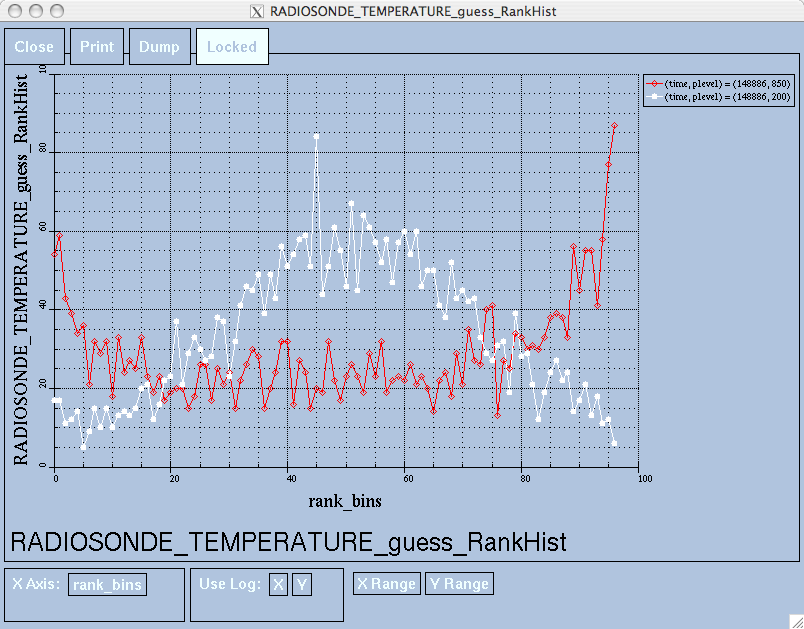

Jump to DART Documentation Main Index
version information for this file:
$Id$
|
|
Jump to DART Documentation Main Index |
Main program for evaluating filter performance in observation space. Primarily, the prior or posterior ensemble mean (and spread) are compared to the observation and several quantities are calculated. These quantities are then saved in a netCDF file that has all the metadata to create meaningful figures.
Each obs_seq.final file contains an observation sequence that has multiple 'copies' of the observation. One copy is the actual observation, another copy is the prior ensemble mean estimate of the observation, one is the spread of the prior ensemble estimate, one may be the prior estimate from ensemble member 1, ... etc. If the original observation sequence is the result of a 'perfect model' experiment, there is an additional copy called the 'truth' - the noise-free expected observation given the true model state. Since this copy does not, in general, exist for the high-order models, all comparisons are made with the copy labelled 'observation'. New! There is a namelist variable (use_zero_error_obs) to compare against the 'truth' instead; the observation error variance is then automatically set to zero.
Each ensemble member applies a forward operator to the state to compute the "expected" value of an observation. Given multiple estimates of the observation, several quantities can be calculated. It is possible to compute the expected observations from the state vector before assimilating (the "guess", "forecast", or "prior") or after the assimilation (the "analysis", or "posterior").
Even with input.nml:filter_nml:num_output_obs_members set to 0; the full [prior,posterior] ensemble mean and [prior,posterior] ensemble spread are preserved in the obs_seq.final file. Consequently, the ensemble means and spreads are used to calculate the diagnostics. If the input.nml:filter_nml:num_output_obs_members is set to 80 (for example); the first 80 ensemble members prior and posterior "expected" values of the observation are also included. In this case, the obs_seq.final file contains enough information to calculate a rank histograms, verify forecasts, etc. The ensemble means are still used for many other calculations.

| 
|  |
 |
There are two versions of this program, one for high-order models that have real observations and another for low-order models. Since this program is fundamentally interested in the response as a function of region, the division was made if the model has a threed_sphere or a oned location_mod.f90. It did not make sense to ask the lorenz_96 model what part of North America you'd like to investigate. The low-order models output simple text files instead of netCDF files - the intent is to move these toward netCDF files in the near future. The low-order models now also write out similar netCDF files and the Matlab scripts have been updated accordingly.
Identity observations (only possible from "perfect model experiments") are already explored with state-space diagnostics, so obs_diag simply skips them.
obs_diag is designed to explore the effect of the assimilation in three ways; 1) as a function of time for a particular variable and level (this is the figure on the left), 2) as a time-averaged vertical profile (figure in the middle), and sometimes 3) in terms of a rank histogram - "Where does the actual observation rank relative to the rest of the ensemble?" (figures on the right). The figures on the left and center were created by several Matlab® scripts that query the obs_diag_output.nc file: DART/diagnostics/matlab/plot_evolution.m and plot_profile.m. Both of these takes as input a file name and a 'quantity' to plot ('rmse','spread','totalspread', ...) and exhaustively plots the quantity (for every variable, every level, every region) in a single matlab figure window - and creates a series of .ps files with multiple pages for each of the figures. The directory gets cluttered with them. The rank histogram information can easily be plotted with ncview, a free third-party piece of software or with plot_rank_histogram.m.
obs_diag is not explicitly designed to explore OSSE's. In general, it is used for 'real' observations and looks through the metadata for the observation sequence to identify which 'copy' is labeled 'observation'. It is THAT copy that is used as the noisy estimate of the truth. obs_diag can be configured to compare the ensemble estimates against the 'observation' copy or the 'truth' copy based on the setting of the use_zero_error_obs namelist variable.
The observation sequence files contain only the time of the observation, nothing of the assimilation interval, etc. - so it requires user guidance to declare what sort of temporal binning for the temporal evolution plots. I do a 'bunch' of arithmetic on the namelist times to convert them to a series of temporal bin edges that are used when traversing the observation sequence. The actual algorithm is that the user input for the start date and bin width set up a sequence that ends in one of two ways ... the last time is reached or the number of bins has been reached.
obs_diag reads obs_seq.final files and calculates the following quantities (in no particular order) for an arbitrary number of regions and levels. It is necessary to query the CopyMetaData variable to determine the storage order (i.e. "which copy is what?").
| Nposs | The number of observations available to be assimilated. |
| Nused | The number of observations that were assimilated. |
| NbigQC | Deprecated. the number of observations that had 'large' (original) QC values; |
| NbadIZ | Deprecated. the number of observations that had 'large' Innovation Z scores (large distance between it and the ensemble); |
| NbadUV | the number of velocity observations that had a matching component that was not assimilated; |
| NbadLV | the number of observations that were above or below the highest or lowest model level, respectively; |
| rmse | The root-mean-squared error (the horizontal wind components are also used to calculate the vector wind velocity and its RMS error). |
| bias | The simple sum of forecast - observation. The bias of the horizontal wind speed (not velocity) is also computed. |
| spread | The standard deviation of the univariate obs. DART does not exploit the bivariate nature of U,V winds and so the spread of the horizontal wind is defined as the sum of the spreads of the U and V components. |
| totalspread | The total standard deviation of the estimate. We pool the ensemble variance of the observation plus the observation error variance and take the square root. |
| NbadDARTQC | the number of observations that had a DART QC value (> 1 for a prior, > 3 for a posterior) |
| observation | the mean of the observation values |
| ens_mean | the ensemble mean of the model estimates of the observation values |
| N_DARTqc_0 | the number of observations that had a DART QC value of 0 |
| N_DARTqc_1 | the number of observations that had a DART QC value of 1 |
| N_DARTqc_2 | the number of observations that had a DART QC value of 2 |
| N_DARTqc_3 | the number of observations that had a DART QC value of 3 |
| N_DARTqc_4 | the number of observations that had a DART QC value of 4 |
| N_DARTqc_5 | the number of observations that had a DART QC value of 5 |
| N_DARTqc_6 | the number of observations that had a DART QC value of 6 |
| N_DARTqc_7 | the number of observations that had a DART QC value of 7 |
The temporal evolution of the above quantities for every observation type (RADIOSONDE_U_WIND_COMPONENT, AIRCRAFT_SPECIFIC_HUMIDITY, ...) is recorded in the output netCDF file - obs_diag_output.nc. This netCDF file can then be loaded and displayed using the Matlab® scripts in ..../DART/diagnostics/matlab. (which may depend on functions in ..../DART/matlab). The temporal, geographic, and vertical binning are under namelist control. Temporal averages of the above quantities are also stored in the netCDF file. Normally, it is useful to skip the 'burn-in' period - the amount of time to skip is under namelist control.
The DART QC flag is intended to provide information about whether the observation was assimilated, evaluated only, whether the assimilation resulted in a 'good' observation, etc. Here is the table that should explain things:
| DART QC flag value | meaning |
|---|---|
| 0 | observation assimilated |
| 1 | observation evaluated only (because of namelist settings) |
| DART QC values higher than this means the prior is OK, but ... | |
| 2 | assimilated, but the posterior forward operator failed |
| 3 | evaluated only, but the posterior forward operator failed |
| DART QC values higher than this were not assimilated because ... | |
| 4 | prior forward operator failed |
| 5 | not used because observation type not listed in namelist |
| 6 | rejected because incoming observation QC too large |
| 7 | rejected because failed outlier threshold test |
| 8+ | reserved for future use |
obs_diag has several improvements:
This namelist is read from the file input.nml. Namelists start with an ampersand '&' and terminate with a slash '/'. Character strings that contain a '/' must be enclosed in quotes to prevent them from prematurely terminating the namelist.
&obs_diag_nml obs_sequence_name = 'obs_seq.final', obs_sequence_list = '', first_bin_center = 2003, 1, 1, 0, 0, 0 , last_bin_center = 2003, 1, 2, 0, 0, 0 , bin_separation = 0, 0, 0, 6, 0, 0 , bin_width = 0, 0, 0, 6, 0, 0 , time_to_skip = 0, 0, 0, 6, 0, 0 , max_num_bins = 1000, rat_cri = 3.0, input_qc_threshold = 3.0, plevel = 1000, 925, 850, 700, 500, 400, 300, 250, 200, 150, 100, hlevel = 1000, 2000, 3000, 4000, 5000, 6000, 7000, 8000, 9000, 10000, 11000, mlevel = 1, 2, 3, 4, 5, 6, 7, 8, 9, 10, 11, Nregions = 4, lonlim1 = 0.0, 0.0, 0.0, 235.0, lonlim2 = 360.0, 360.0, 360.0, 295.0, latlim1 = 20.0, -80.0, -20.0, 25.0, latlim2 = 80.0, -20.0, 20.0, 55.0, reg_names = 'Northern Hemisphere', 'Southern Hemisphere', 'Tropics', 'North America', trusted_obs = 'null', print_mismatched_locs = .false., create_rank_histogram = .false., outliers_in_histogram = .false., use_zero_error_obs = .false., verbose = .false. / -or- plevel_edges = 1050, 962.5, 887.5, 775, 600, 450, 350, 275, 225, 175, 125, 75 -or- hlevel_edges = 0, 1500, 2500, 3500, 4500, 5500, 6500, -or- mlevel_edges = 0.5, 1.5, 2.5, 3.5, 10.5,
The date-time integer arrays in this namelist have the form
(YYYY, MM, DY, HR, MIN, SEC).
The allowable ranges for the region
boundaries are: latitude [-90.,90], longitude [0.,Inf.]
You can only specify either obs_sequence_name or obs_sequence_list -- not both. One of them has to be an empty string ... i.e. ''.
| Item | Type | Description |
|---|---|---|
| obs_sequence_name | character | Name of the observation sequence file(s). This may be a relative or absolute filename. If the filename contains a '/' the filename is considered to be comprised of everything to the right, and a directory structure to the left. The directory structure is then queried to see if it can be incremented to handle a sequence of observation files. The default behavior of obs_diag is to look for additional files to include until the files are exhausted or an obs_seq.final file is found that contains observations beyond the timeframe of interest. e.g. 'obsdir_001/obs_seq.final' will cause obs_diag to look for 'obsdir_002/obs_seq.final', and so on. If this is set, obs_sequence_list must be set to ' ' (empty string). |
| obs_sequence_list | character | Name of an ascii text file which contains a list of one or more observation sequence files, one per line. If this is specified, obs_sequence_name must be set to ' '. Can be created by any method, including sending the output of the 'ls' command to a file, a text editor, or another program. If this is set, obs_sequence_name must be set to ' ' (empty string). |
| first_bin_center | integer, dimension(6) | first timeslot of the first obs_seq.final file to process. The six integers are: year, month, day, hour, hour, minute, second, in that order. obs_diag has improved run-time output that reports the time and date of the first and last observations in every observation sequence file. Look for the string 'First observation date' in the logfile. If the verbose is 'true', it is also written to the screen. |
| last_bin_center | integer, dimension(6) | last timeslot of interest. (reminder: the last timeslot of day 1 is hour 0 of day 2) The six integers are: year, month, day, hour, hour, minute, second, in that order. This does not need to be exact, the values from first_bin_center and bin_separation are used to populate the time array and stop on or before the time defined by last_bin_center. See also max_num_bins. |
| bin_separation | integer, dimension(6) | Time between bin centers. The year and month values must be zero. |
| bin_width | integer, dimension(6) | Time span around bin centers in which obs will be compared. The year and month values must be zero. Frequently, but not required to be, the same as the values for bin_separation. 0 |
| time_to_skip | integer, dimension(6) | Time span at the beginning to skip when calculating vertical profiles of rms error and bias. The year and month values must be zero. Useful because it takes some time for the assimilation to settle down from the climatological spread at the start. time_to_skip is an amount of time AFTER the first edge of the first bin. |
| max_num_bins | integer | This provides an alternative way to declare the last_bin_center. If max_num_bins is set to '10', only 10 timesteps will be output - provided last_bin_center is set to some later date. |
| plevel | real, dimension(50) | The midpoints defining the pressure levels for the vertical binning. There is no specification of bin width - a continuum is used. If a single midpoint value is entered, the bin edges are +/- 10% of the midpoint value. If you'd like to change that see the routine Rmidpoints2edges(). You may specify either plevel or plevel_edges, but not both. |
| plevel_edges | real, dimension(51) | The edges defining the pressure levels for the vertical binning. You may specify either plevel or plevel_edges, but not both. |
| hlevel | real, dimension(50) | Same, but for observations that have height(m) or depth(m) as the vertical coordinate. |
| hlevel_edges | real, dimension(51) | The edges defining the height (or depth) levels for the vertical binning. You may specify either hlevel or hlevel_edges, but not both. |
| mlevel | real, dimension(50) | Same, but for observations that have model level as the vertical coordinate. |
| mlevel_edges | real, dimension(51) | The edges defining the model levels for the vertical binning. You may specify either mlevel or mlevel_edges, but not both. |
| rat_cri | real | Deprecated. This was useful before the advent of the DART QC mechanism, which has been in place for years now. The only thing rat_cri did was to count how many observations were 'far' away from the ensemble, something the DART QC codes convey much better. The histogram of the magnitude of the innovations is still in LargeInnov.txt . |
| input_qc_threshold | real | Deprecated. Observations with original quality control values greater than this were counted in NbigQC. The DART QC value has controlled whether or not the observation was rejected or not. |
| Nregions | integer | Number of regions of the globe for which obs space diagnostics are computed separately. Must be between [1,50]. |
| lonlim1 | real, dimension(50) | Westernmost longitudes of each of the regions. |
| lonlim2 | real, dimension(50) | Easternmost longitudes of each of the regions. If any of these values is less than the westernmost values, it defines a region that spans the prime meridian. e.g. a specification of lonlim1 = 330 , lonlim2 = 50 could identify a region like "Africa". |
| latlim1 | real, dimension(50) | Southernmost latitudes of the regions. |
| latlim2 | real, dimension(50) | Northernmost latitudes of the regions. |
| reg_names | character(len=129), dimension(50) | Array of names for the regions to be analyzed. Will be used for plot titles. |
| trusted_obs | character(len=32), dimension(50) | list of observation types that must participate in the calculation of the statistics, regardless of the DART QC (provided that the forward observation operator can still be applied without failure). e.g. 'RADIOSONDE_TEMPERATURE', ... |
| use_zero_error_obs | logical | if .true., the observation copy used for the statistics calculations will be 'truth'. Only 'perfect' observations (from perfect_model_obs) have this copy. The observation error variance will be set to zero. |
| print_mismatched_locs | logical | Print instances where U and V "pairs" don't have the same location. |
| print_obs_locations | logical | No longer supported. To plot the locations of observations, please convert your observation sequence file to netCDF with obs_seq_to_netcdf and then plot with plot_obs_netcdf |
| create_rank_histogram | logical | if .true. and there are actual ensemble estimates of the observations in the obs_seq.final (i.e. filter_nml:num_output_obs_members is larger than zero), a rank histogram will be created. |
| outliers_in_histogram | logical | if .true. the observations that have been rejected by the outlier threshhold mechanism will be included in the calculation of the rank histogram. |
| verbose | logical | Print extra info about the obs_diag run. |
obs_sequence_mod obs_kind_mod obs_def_mod (and possibly other obs_def_xxx mods) assim_model_mod random_seq_mod random_nr_mod model_mod location_mod types_mod time_manager_mod utilities_mod sort_mod
Obs_diag may require a model input file from which to get grid information, metadata, and links to modules providing the models expected observations. It all depends on what's needed by the model_mod.f90
Every observation type encountered in the observation sequence file is tracked separately, and aggregated into temporal and 3D spatial bins. There are two main efforts to this program. One is to track the temporal evolution of any of the quantities available in the netCDF file for any possible observation type:
The other is to explore the vertical profile of a particular observation kind. By default, each observation kind has a 'guess/prior' value and an 'analysis/posterior' value - which shed some insight into the innovations.
The obs_diag_output.nc output file has all the metadata I could think of, as well as separate variables for every observation type in the observation sequence file. Furthermore, there is a separate variable for the 'guess/prior' and 'analysis/posterior' estimate of the observation. To distinguish between the two, a suffix is appended to the variable name. An example seems appropriate:
...
char CopyMetaData(copy, stringlength) ;
CopyMetaData:long_name = "quantity names" ;
char ObservationTypes(obstypes, stringlength) ;
ObservationTypes:long_name = "DART observation types" ;
ObservationTypes:comment = "table relating integer to observation type string" ;
float RADIOSONDE_U_WIND_COMPONENT_guess(time, copy, plevel, region) ;
RADIOSONDE_U_WIND_COMPONENT_guess:_FillValue = -888888.f ;
RADIOSONDE_U_WIND_COMPONENT_guess:missing_value = -888888.f ;
float RADIOSONDE_V_WIND_COMPONENT_guess(time, copy, plevel, region) ;
RADIOSONDE_V_WIND_COMPONENT_guess:_FillValue = -888888.f ;
RADIOSONDE_V_WIND_COMPONENT_guess:missing_value = -888888.f ;
...
float MARINE_SFC_ALTIMETER_guess(time, copy, surface, region) ;
MARINE_SFC_ALTIMETER_guess:_FillValue = -888888.f ;
MARINE_SFC_ALTIMETER_guess:missing_value = -888888.f ;
...
float RADIOSONDE_WIND_VELOCITY_guess(time, copy, plevel, region) ;
RADIOSONDE_WIND_VELOCITY_guess:_FillValue = -888888.f ;
RADIOSONDE_WIND_VELOCITY_guess:missing_value = -888888.f ;
...
float RADIOSONDE_U_WIND_COMPONENT_analy(time, copy, plevel, region) ;
RADIOSONDE_U_WIND_COMPONENT_analy:_FillValue = -888888.f ;
RADIOSONDE_U_WIND_COMPONENT_analy:missing_value = -888888.f ;
float RADIOSONDE_V_WIND_COMPONENT_analy(time, copy, plevel, region) ;
RADIOSONDE_V_WIND_COMPONENT_analy:_FillValue = -888888.f ;
RADIOSONDE_V_WIND_COMPONENT_analy:missing_value = -888888.f ;
...
There are several things to note:
Believe it or not, there are another set of netCDF variables specifically for the vertical profiles, essentially duplicating the previous variables but without the 'time' dimension. These are distinguished by the suffix added to the observation kind - 'VPguess' and 'VPanaly' - 'VP' for Vertical Profile.
...
float SAT_WIND_VELOCITY_VPguess(copy, plevel, region) ;
SAT_WIND_VELOCITY_VPguess:_FillValue = -888888.f ;
SAT_WIND_VELOCITY_VPguess:missing_value = -888888.f ;
...
float RADIOSONDE_U_WIND_COMPONENT_VPanaly(copy, plevel, region) ;
RADIOSONDE_U_WIND_COMPONENT_VPanaly:_FillValue = -888888.f ;
RADIOSONDE_U_WIND_COMPONENT_VPanaly:missing_value = -888888.f ;
...
Observations flagged as 'surface' do not participate in the vertical profiles (Because surface variables cannot exist on any other level, there's not much to plot!). Observations on the lowest level DO participate. There's a difference!
If it is possible to calculate a rank histogram, there will also be :
... int RADIOSONDE_U_WIND_COMPONENT_guess_RankHi(time, rank_bins, plevel, region) ; ... int RADIOSONDE_V_WIND_COMPONENT_guess_RankHi(time, rank_bins, plevel, region) ; ... int MARINE_SFC_ALTIMETER_guess_RankHist(time, rank_bins, surface, region) ; ...
as well as some global attributes. The attributes reflect the namelist settings and can be used by plotting routines to provide additional annotation for the histogram.
:DART_QCs_in_histogram = 0, 1, 2, 3, 7 ; :outliers_in_histogram = "TRUE" ;
Please note:
| Instructions for viewing the rank histogram with ncview. | |
|
Instructions for viewing the rank histogram with Matlab. |
obs_diag is built in .../DART/models/your_model/work, in the same way as the other DART components.
There are two ways to specify input files for obs_diag. You can either specify the name of a file containing a list of files (in obs_sequence_list), or you may specify obs_sequence_name, which is descibed by the following illustration ...
| value | effect |
|---|---|
| "obs_seq.final" | A single file is processed. The file must exist in the current directory. |
| "/path_to/nirvana/obs_seq.final" | A single file is processed. The file must exist where you said it exists. |
| "../nirvana/obs_seq.final" | A single file is processed. Relative pathnames work just fine. |
| "/path_to/nirvana_001/obs_seq.final" | A single file is processed, and more are expected. Because the directory name contains an underscore ("_") and the portion of the directory to the right of the (rightmost) underscore can be incremented, obs_diag will try to look for the next directory in the sequence, i.e. "/path_to/nirvana_002/obs_seq.final". The tricky part is that the number of digits in the directory numbering must remain constant. Most (all?) of the DART scripts that produce these directories have historically used a constant number of digits so they alphabetically and numerically 'list' identically. obs_diag will stop when it runs out of files to ingest, or if it encounters an observation sequence file whose first time is beyond the timeframe of interest. |
| In this example, we will be accumulating metrics for 30 days over the entire globe. The obs_diag_output.nc file will have exactly ONE timestep in it (so it won't be much use for the plot_evolution functions) - but the plot_profile functions and the plot_rank_histogram function will be used to explore the assimilation. By way of an example, we will NOT be using outlier observations in the rank histogram. Lets presume that all your obs_seq.final files are in alphabetically-nice directories: | |
/Exp1/Dir01/obs_seq.final /Exp1/Dir02/obs_seq.final /Exp1/Dir03/obs_seq.final ... /Exp1/Dir99/obs_seq.final
The first step is to create a file containing the list of observation sequence files you want to use. This can be done with the unix command 'ls' with the -1 option (that's a number one) to put one file per line.
It is necessary to turn on the verbose option to check the first/last times that will be used for the histogram. Then, the namelist settings for 2008 07 31 12Z through 2008 08 30 12Z are:
&obs_diag_nml obs_sequence_name = '', obs_sequence_list = 'obs_file_list.txt', first_bin_center = 2008, 8,15,12, 0, 0 , last_bin_center = 2008, 8,15,12, 0, 0 , bin_separation = 0, 0,30, 0, 0, 0 , bin_width = 0, 0,30, 0, 0, 0 , time_to_skip = 0, 0, 0, 0, 0, 0 , max_num_bins = 1000, rat_cri = 5000.0, input_qc_threshold = 3.0, Nregions = 1, lonlim1 = 0.0, lonlim2 = 360.0, latlim1 = -90.0, latlim2 = 90.0, reg_names = 'Entire Domain', print_mismatched_locs = .false., print_obs_locations = .false., verbose = .true., outliers_in_histogram = .false., /
then, simply run obs_diag in the usual manner - you may want to save the run-time output to a file. Here is a portion of the run-time output:
... Region 1 Entire Domain (WESN): 0.0000 360.0000 -90.0000 90.0000 Requesting 1 assimilation periods. epoch 1 start day=148865, sec=43201 epoch 1 center day=148880, sec=43200 epoch 1 end day=148895, sec=43200 epoch 1 start 2008 Jul 31 12:00:01 epoch 1 center 2008 Aug 15 12:00:00 epoch 1 end 2008 Aug 30 12:00:00 ... MARINE_SFC_HORIZONTAL_WIND_guess_RankHis has 0 "rank"able observations. SAT_HORIZONTAL_WIND_guess_RankHist has 0 "rank"able observations. ...
Discussion: It should be pretty clear that there is exactly 1 assimilation period,
it may surprise you that the start is 1 second past 12Z. This is deliberate and reflects
the DART convention of starting intervals 1 second after the end of the previous interval.
The times in the netCDF variables reflect the defined start/stop of the period, regardless
of the time of the first/last observation.
Please note that none of the 'horizontal_wind' variables will have a rank histogram,
so they are not written to the netCDF file. ANY variable that does not have a rank
histogram with some observations will NOT have a rank histogram variable
in the netCDF file.
Now that you have the obs_diag_output.nc, you can explore it with
plot_profile.m, plot_bias_xxx_profile.m, or plot_rmse_xxx_profile.m,
and look at the rank histograms with
ncview or
plot_rank_histogram.m.
please convert your observation sequence file to netCDF format with obs_seq_to_netcdf and use plot_obs_netcdf.m.
| Routine | Message | Comment |
|---|---|---|
| obs_diag | No first observation in sequence. | get_first_obs couldn't find a "first obs" in the obs_seq.final. |
| obs_diag | No last observation in sequence | get_last_obs couldn't find a "last obs" in the obs_seq.final |
| obs_diag | metadata incomplete | Couldn't find the index for the observatoin value in the observation sequence file. It is the only one that is required. |
| filter_get_obs_info | Vertical coordinate not recognized | It must be "surface", "pressure", or "height" |
| Convert2Time | namelist parameter out-of-bounds. Fix and try again | bin_width, bin_separation, and time_to_skip must have year = 0 and month = 0 |
| ObsLocationsExist | Cannot have pre-existing obs location output files. Stopping. | It is far easier to implement the logic to output these files if they don't exist in the first place. Remove anything/everything like "observation_locations.xxx.dat" from the current directory and try again. |
none at this time
The RMSE of the vector wind velocity is being used.
The bias is actually the bias of the wind speed, with no regard to
direction. Seems like this is not consistent ...
Use log(p) instead of pressure for binning/plotting.
Hope to have a separate DART QC flag for observations outside the model state.
Right now, all observations that have a DARt forward operator fail (extrapolate, mainly)
get counted as observations that are rejected. Logically, these observations are not possible because most (all?) DART observation operators cannot extrapolate.
N/A
DART software - Copyright 2004 - 2013 UCAR.
This open source software is provided by UCAR, "as is",
without charge, subject to all terms of use at
http://www.image.ucar.edu/DAReS/DART/DART_download
| Contact: | Tim Hoar |
| Revision: | $Revision$ |
| Source: | $URL$ |
| Change Date: | $Date$ |
| Change history: | try "svn log" or "svn diff" |
{kind=link}